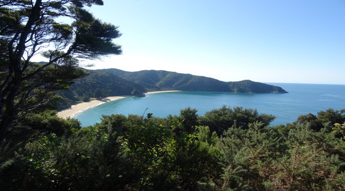

Details
Abel Tasman National Park is a New Zealand national park located between Golden Bay and Tasman Bay at the north end of the South Island. It is named after Abel Tasman, who in 1642 became the first European explorer to sight New Zealand and who anchored nearby in Golden Bay.
Known for its golden beaches and world famous Coastal track. The park is extremely remote with access to it being mainly by foot. There are several campsites in the park however these aare hard to reach by car and have to elecricity and the nearest store is a 2 hour drive away. It is the perfect place to get away from the world and relax.
Details
The Coromandel Peninsula lies east of Auckland, on the other side of the Hauraki Gulf.
Rustic, relaxed and unspoiled, the Coromandel is one of New Zealand's best-loved holiday destinations.
The rugged volcanic hills are cloaked in native rainforest, and more than 400 kilometres of spectacular coastline promises you can find the beach of your dreams. The Coromandel is a place where bush and beach are both easily accessible. In the same day, you can experience the blue dazzle of the Pacific Ocean and calming greenness of the kauri forest.
On the west coast, there's a never-ending parade of beaches, coves and harbours lined with pohutukawa trees (a red flowering native of New Zealand).
The eastern side of the Coromandel is furnished with an amazing collection of white sand and surf beaches, and an impressive, heavily forested mountain range runs right up the middle of the peninsula.